// La Scatola Nera
Sezione 00. L'antefattoBreve aggiornamento personale: mi hanno sgridato perche' ho hackerato il gesso. Me lo hanno rifatto. Pero' alla fine non mi devono operare. Il tavolo operatorio resta libero.
Perfetto. Ci mettiamo sopra un LLM.
La iena sta fissando il terminale. Ha appena chiesto a un modello locale "come fa a sapere che Roma e' in Italia?" e quello ha risposto con un paragrafo perfetto. Corretto in ogni dettaglio.
"Ma come fa a saperlo?"
"Non lo sa. Lo calcola."
"Nel senso? Da qualche parte ci sara' scritto 'Roma, Italia', no?"
"Da nessuna parte. Non c'e' un database, non c'e' una tabella. Ci sono 124 milioni di numeri che moltiplicati tra loro nel giusto ordine producono 'Italia' come output piu' probabile dopo la tua domanda."
"E nessuno sa perche' quei numeri producono proprio quello?"
"Fino a poco tempo fa, no. Si sapeva che funzionava. Non si sapeva come. Adesso qualcuno ha iniziato ad aprire il cofano."
La iena si sposta la sedia vicina.
"Apriamo il cofano."
// Apri il Terminale
Sezione 01. Forward pass, sette righe, e il primo segreto"Niente teoria. Apriamo direttamente un modello e guardiamoci dentro."
GPT-2 small. 124 milioni di parametri. Piccolo abbastanza da girare su CPU, grande abbastanza da avere circuiti veri. Non usiamo un modello di Ollama perche' Ollama e' un motore di inferenza: gli dai un prompt, ti restituisce testo. Scatola nera. Per guardare dentro servono le attivazioni di ogni singolo neurone, e TransformerLens te le da' tutte.
La frase di test: "When Alice and Bob went to the bar, Alice bought a beer for".
"Alice e Bob? Quelli della crittografia?"
"No. Alice e' quella del paese delle meraviglie. E Bob e' quel tipo che aggiustava tutto nei cartoni che guardava la Sere da piccola."
"..."
"Ok si', quelli della crittografia. Ma stavolta non scambiano chiavi. Vanno al bar. E il modello deve capire che Alice compra la birra a Bob, non a se stessa."
Nota: GPT-2 e' stato trainato su testo inglese, quindi le frasi di test sono in inglese. Il circuito che stiamo per smontare funziona con qualsiasi lingua, la struttura interna e' la stessa.
| 1 | from transformer_lens import HookedTransformer |
| 2 | import torch |
| 3 | |
| 4 | model = HookedTransformer.from_pretrained('gpt2-small', device='cpu') |
| 5 | prompt = 'When Alice and Bob went to the bar, Alice bought a beer for' |
| 6 | tokens = model.to_tokens(prompt) |
| 7 | logits, cache = model.run_with_cache(tokens) |
Fatto. Il modello e' caricato, il forward pass e' eseguito, e cache contiene le attivazioni di ogni singolo componente del modello. Ogni layer, ogni head, ogni MLP. Tutto accessibile per nome.
Adesso la domanda: chi ha deciso l'output? Il modello ha 144 attention head distribuiti su 12 layer. L'output finale e' la somma di tutti i loro contributi. Possiamo calcolare quanto ciascuno ha spinto verso il token predetto.
| 1 | # Target: il token piu' probabile |
| 2 | probs = torch.softmax(logits[0, -1], dim=-1) |
| 3 | target = probs.argmax().item() |
| 4 | W_U = model.W_U[:, target] # colonna di unembedding |
| 5 | |
| 6 | # Contributo di ogni head: output · W_U |
| 7 | for layer in range(12): |
| 8 | z = cache[f'blocks.{layer}.attn.hook_z'][0, -1] # [n_heads, d_head] |
| 9 | for head in range(12): |
| 10 | contrib = (z[head] @ model.blocks[layer].attn.W_O[head] @ W_U).item() |
Risultato: una heatmap 12x12 (layer x head) dove ogni cella dice "quanto questo head spinge verso il token target". Alcuni head sono quasi a zero. Ma al layer 9, un paio di head si accendono come un faro.
"Vedi quei numeri? Ogni cella e' un attention head. Il modello ha 144 head distribuiti su 12 layer. L'output finale e' la somma di tutti i loro contributi."
"Aspetta. Somma? Non sovrascrittura?"
"Somma. Questa e' la struttura fondamentale di un transformer. C'e' un vettore a 768 dimensioni che viaggia da un layer all'altro. Si chiama residual stream. Immaginalo come un nastro trasportatore. All'inizio ci metti il token di input, trasformato in un vettore (l'embedding). Poi ogni layer legge dal nastro, fa il suo calcolo, e somma il risultato al nastro. Non sovrascrive: somma."
"Siccome il forward pass e' una somma, puoi scomporre il risultato finale nella somma dei contributi di ogni componente. Prendi l'output di un singolo attention head, lo moltiplichi per la matrice di unembedding WU, e ottieni il suo contributo diretto al logit di ogni token del vocabolario. Si chiama Direct Logit Attribution."
Script: lab_01_forward_pass.py
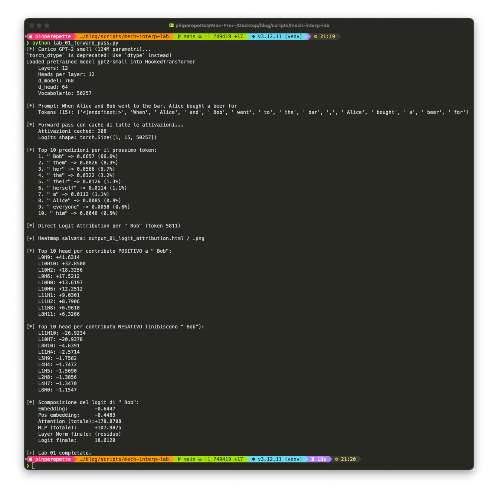
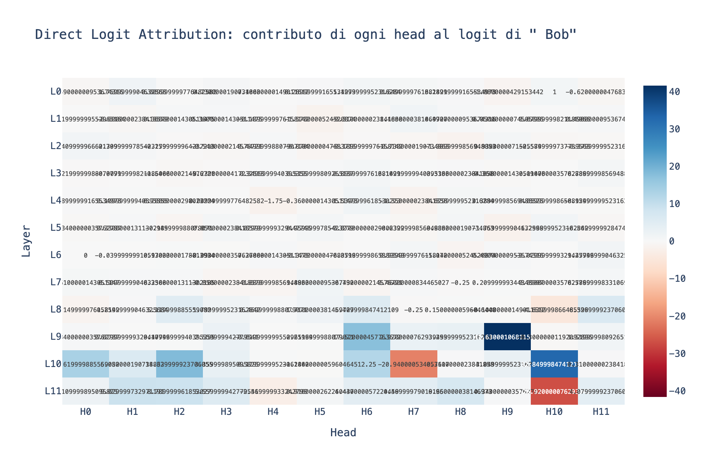
// Dove Guarda Ogni Head
Sezione 02. Attention patterns e i due circuiti QK/OV"Ok, sappiamo quanto contribuisce ogni head. Ma come contribuisce? Dove sta guardando?"
"Guardiamolo."
| 1 | # Pattern di attenzione di L9H9 (il head col contributo piu' alto) |
| 2 | attn_pattern = cache['blocks.9.attn.hook_pattern'][0, 9] |
| 3 | # Shape: [seq_len, seq_len] |
| 4 | # attn_pattern[i][j] = quanto il token i attende al token j |
| 5 | |
| 6 | # Ultima posizione: dove guarda per predire il prossimo token? |
| 7 | last_pos_attn = attn_pattern[-1] # [seq_len] |
| 8 | str_tokens = model.to_str_tokens(prompt) |
| 9 | for i, (tok, score) in enumerate(zip(str_tokens, last_pos_attn)): |
| 10 | if score > 0.05: |
| 11 | print(f'{tok:<15} {score:.3f}') |
"Vedi L9H9? Guarda dove punta: dritto verso 'Bob'. Quel head sta copiando il nome nella posizione finale."
La iena alza un sopracciglio. "Sta cercando il mio nome nella frase?"
"Piu' o meno. Sta cercando il nome che non e' il soggetto ripetuto. 'Alice' appare due volte, 'Bob' una volta sola. L9H9 punta verso il nome non ripetuto e lo copia come output."
"Ma come fa a sapere dove guardare e cosa copiare?"
"Perche' ogni attention head ha due circuiti indipendenti. Il primo, il circuito QK (Query-Key), decide dove guardare. Prende il token corrente, lo trasforma in un vettore query, lo confronta con i vettori key di tutti i token precedenti, e produce una distribuzione di probabilita'. Il secondo, il circuito OV (Output-Value), decide cosa copiare da quella posizione."
"Due matrici per decidere dove, due matrici per decidere cosa. Quattro matrici in totale per head. 144 head nel modello. Sono 576 matrici che interagiscono tra loro."
"E puoi studiarle una alla volta?"
"Si'. Non guardi le matrici singole, guardi il loro prodotto. Il circuito QK si legge come WQT · WK: una matrice che dice 'dato il residual stream nella posizione source e destination, quanto il head attende dal source al destination?' Il circuito OV si legge come WV · WO: 'dato che sto attendendo a questa posizione, cosa copio nel residual stream?'
Il framework di Elhage et al. (2021): i transformer non sono una sequenza di layer opachi. Sono un grafo computazionale dove ogni attention head legge e scrive dal residual stream. Due head in layer diversi comunicano tramite il residual stream: il primo scrive, il secondo legge. Questa struttura permette di tracciare circuiti complessi attraverso il modello.
Script: lab_02_attention_patterns.py
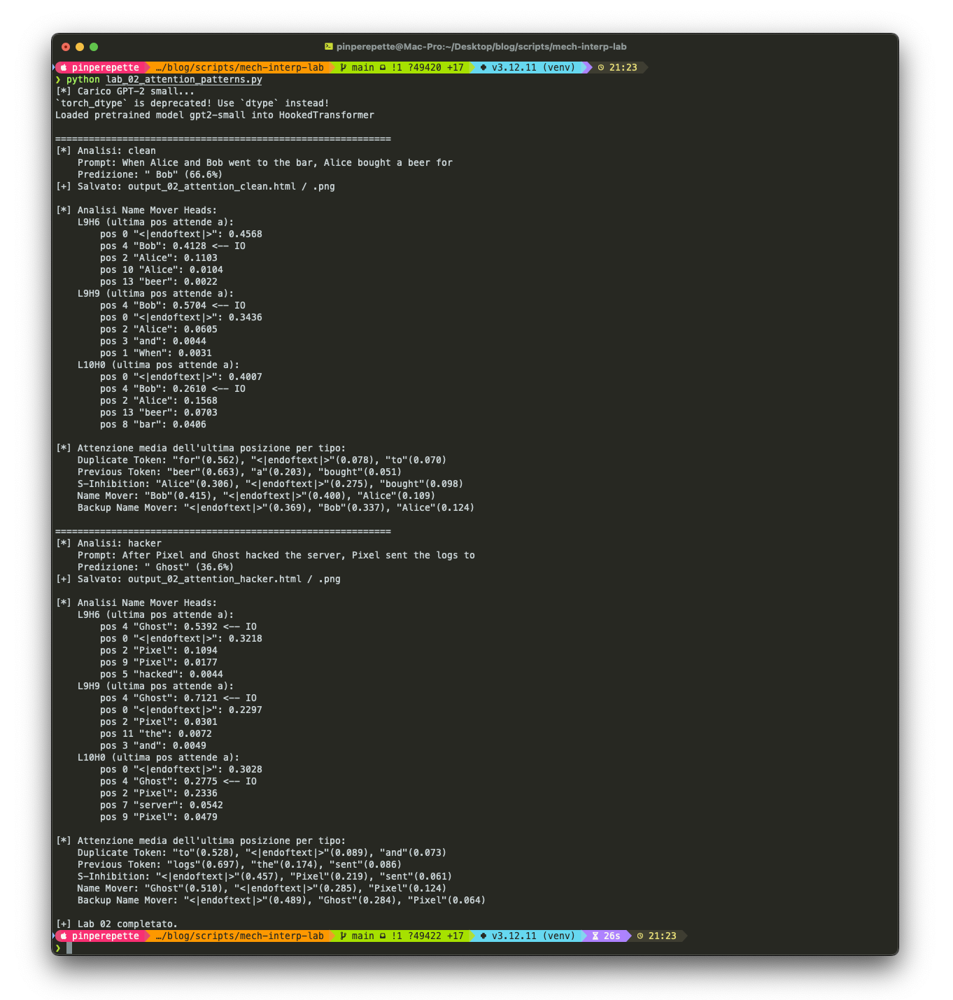
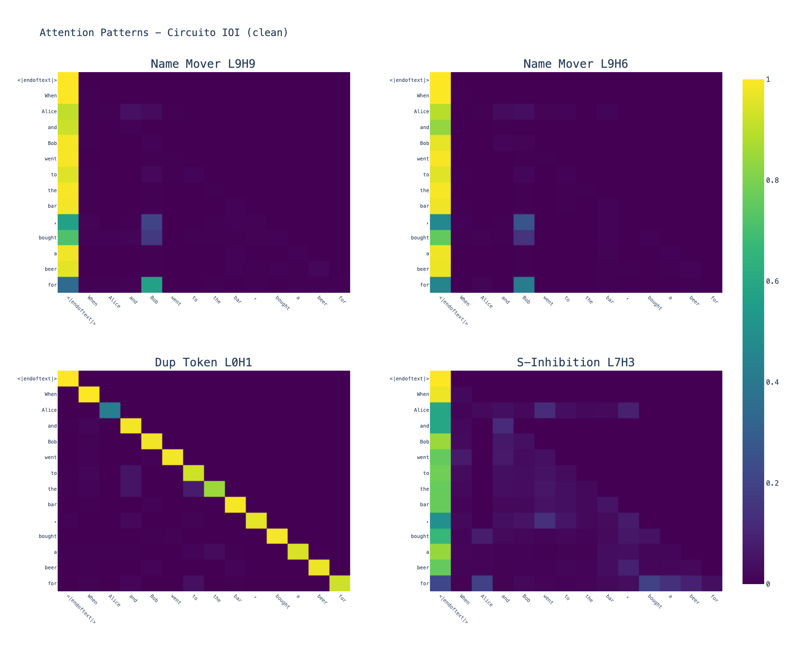
// Chirurgia Causale
Sezione 03. Activation patching e il circuito IOI"Ok, L9H9 ha un contributo alto e punta verso il nome giusto. Ma e' davvero lui il colpevole, o e' una coincidenza? Magari il suo contributo viene cancellato da un altro head piu' avanti."
"Buona domanda. Per stabilire la causalita' serve un intervento. Come un esperimento controllato: prendi due topi, uno sano e uno mutato. Inneschi un singolo gene dal sano nel mutato. Se il topo guarisce, quel gene era il responsabile."
"Con il modello come funziona?"
"Prendi due input. Il primo e' la frase originale (clean). Il secondo e' una versione corrotta dove cambi un nome. Nel run corrupted il modello predice il nome sbagliato. Ora, per ogni head, sostituisci la sua attivazione nel run corrupted con quella del run clean. Se il modello torna a predire il nome giusto, quel head e' causalmente responsabile."
| 1 | clean_prompt = 'When Alice and Bob went to the bar, Alice bought a beer for' |
| 2 | corrupted_prompt = 'When Alice and Charlie went to the bar, Alice bought a beer for' |
| 3 | |
| 4 | clean_logits, clean_cache = model.run_with_cache(clean_tokens) |
| 5 | corrupted_logits, corrupted_cache = model.run_with_cache(corrupted_tokens) |
| 6 | |
| 7 | # Patch un singolo head alla volta |
| 8 | def patch_hook(activation, hook, layer, head): |
| 9 | activation[:, :, head, :] = clean_cache[hook.name][:, :, head, :] |
| 10 | return activation |
| 11 | |
| 12 | # Per ogni head: quanto recupera il logit corretto? |
| 13 | patched_logits = model.run_with_hooks(corrupted_tokens, |
| 14 | fwd_hooks=[(f'blocks.{layer}.attn.hook_z', patch_hook)]) |
Risultato: una heatmap 12x12 con significato causale. I Name Mover Heads (L9H6, L9H9, L10H0) hanno recovery alto e positivo. Patcharli ripristina la predizione corretta. I S-Inhibition Heads (L7H3, L7H9, L8H6, L8H10) hanno recovery negativo: il loro ruolo e' inibire, non promuovere.
"Aspetta. Se ci sono head che promuovono e head che inibiscono, vuol dire che collaborano."
"Esatto. E' un circuito. Nel 2022 un team di Redwood Research ha smontato questo circuito pezzo per pezzo. Si chiama IOI (Indirect Object Identification): 26 attention heads, organizzati in 5 classi funzionali."
"L'algoritmo funziona cosi'. I Duplicate Token Heads (layer 0) scansionano la frase e segnalano che 'Alice' appare due volte. I Previous Token Heads (layer 2 e 4) copiano informazione contestuale. I S-Inhibition Heads (layer 7 e 8) ricevono il segnale di duplicazione e inibiscono 'Alice' nella posizione finale. I Name Mover Heads (layer 9 e 10) cercano nomi nella frase e copiano quello non inibito ('Bob') come output. I Backup Name Mover sono ridondanza: il modello ha imparato a non fidarsi di un solo percorso."
"Ventisei head su 144. Il resto?"
"Per questo task specifico? Rumore. Il circuito IOI usa solo il 18% degli head del modello."
Fermati un secondo. Quello che abbiamo appena trovato non e' una correlazione statistica. E' una catena causale. Cinque classi di head che cooperano in sequenza, ognuna con un ruolo preciso, collegate da segnali che passano attraverso il residual stream. Questo non e' un blob di numeri. E' un algoritmo. Un programma che nessuno ha scritto, emerso durante il training.
La rivelazione: quando apri un LLM e osservi i suoi circuiti interni, non trovi una massa indistinta di neuroni. Trovi qualcosa di sorprendentemente simile a un software: piccoli algoritmi distribuiti che cooperano per produrre il comportamento del modello. Gli LLM non sono solo modelli statistici. Sono macchine che eseguono algoritmi che non abbiamo programmato.
Script: lab_03_activation_patching.py
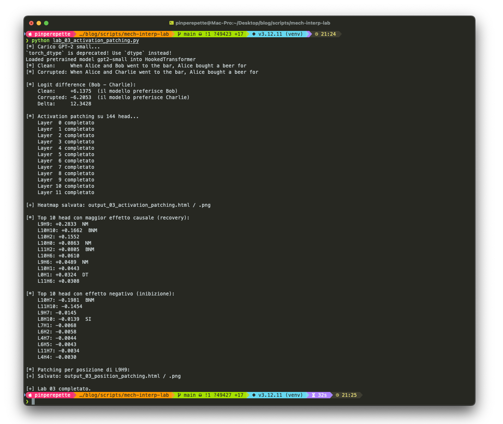
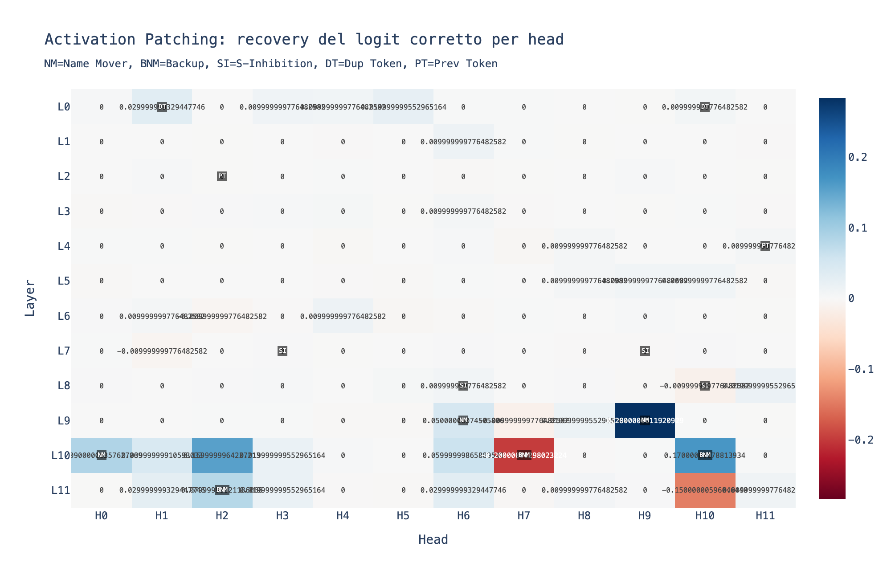
// Le Connessioni tra Head
Sezione 04. Path patching: chi parla con chi"Sappiamo quali head contano. Ma come comunicano? Come fa il segnale di L0H1 ('ho visto un nome duplicato') ad arrivare a L7H3 ('inibisci quel nome')?"
"Passano entrambi per il residual stream. L0H1 scrive un segnale nel nastro trasportatore, e L7H3 lo legge qualche layer dopo. Per verificarlo, usiamo il path patching: invece di patchare l'intero output di un head, patchi solo il contributo che passa da un head specifico a un altro."
| 1 | # Contributo di L0H1 (Duplicate Token) |
| 2 | clean_z = clean_cache['blocks.0.attn.hook_z'][0, :, 1, :] |
| 3 | corr_z = corrupted_cache['blocks.0.attn.hook_z'][0, :, 1, :] |
| 4 | diff = clean_z - corr_z |
| 5 | |
| 6 | # Proiettare nel residual stream tramite W_O |
| 7 | W_O = model.blocks[0].attn.W_O[1] |
| 8 | residual_diff = diff @ W_O |
| 9 | |
| 10 | # Iniettare solo prima del target (L7H3 S-Inhibition) |
| 11 | def path_hook(activation, hook): |
| 12 | activation[0] += residual_diff |
| 13 | return activation |
| 14 | |
| 15 | patched = model.run_with_hooks(corrupted_tokens, |
| 16 | fwd_hooks=[('blocks.7.hook_resid_pre', path_hook)]) |
Se il path L0H1 → L7H3 ha recovery alto, la connessione e' reale: il Duplicate Token Head comunica direttamente con il S-Inhibition Head attraverso il residual stream. Se il recovery e' zero, la connessione non esiste (o passa per un percorso diverso). Cosi' ricostruisci il grafo del circuito, edge per edge.
"E' come tracciare i cavi dentro un quadro elettrico."
"Esattamente. E il risultato e' una mappa completa: 26 head, 5 classi, connessioni tracciate. Un algoritmo distribuito che il modello ha imparato durante il training senza che nessuno glielo abbia insegnato."
Costo computazionale: l'activation patching richiede un forward pass per ogni (layer, head), quindi 144 run. Il path patching richiede un run per ogni coppia (source, target), potenzialmente 144² = 20.736 run. Su CPU con GPT-2 small ci vogliono 2-3 minuti per il patching e 5-10 minuti per il path patching. Fattibile. Su modelli piu' grandi si usa attribution patching (Neel Nanda, 2023), un'approssimazione al primo ordine con gradienti che costa un singolo forward + backward pass.
Script: lab_04_path_patching.py
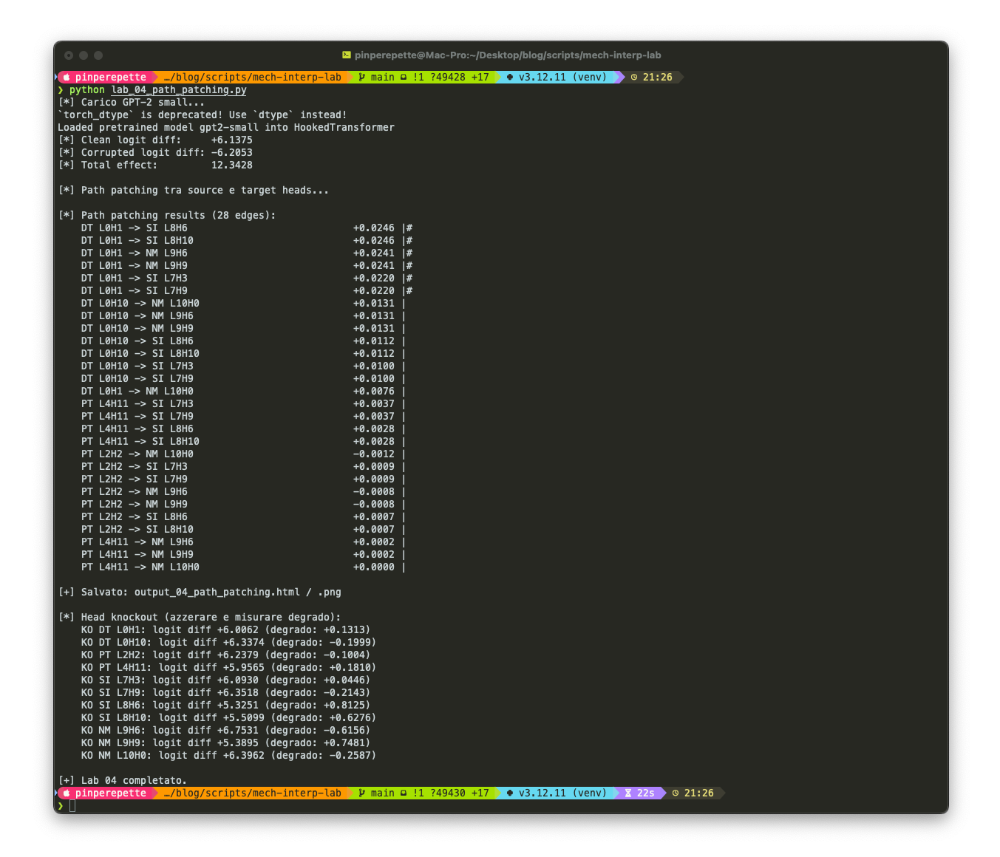
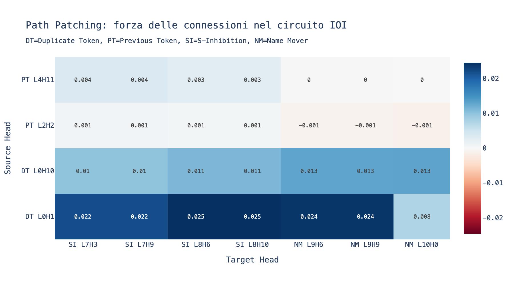
// Il Problema Nascosto (e la Soluzione)
Sezione 05. Superposition, polisemanticity, e Sparse Autoencoders"Bene, abbiamo il circuito. 26 head, ruoli chiari, connessioni tracciate. Ma c'e' un problema."
"Quale?"
"Dentro ogni head ci sono migliaia di concetti sovrapposti. Guarda."
Apro il terminale e mostro le attivazioni di un singolo neurone del residual stream. Si attiva per gatti. Per temperature basse. Per il suffisso "-tion". E per altri trenta concetti che non hanno niente in comune.
"Questo neurone e' ubriaco."
"No, e' efficiente. Il modello ha 768 dimensioni nel residual stream, ma i concetti che deve codificare sono migliaia, forse milioni: citta', persone, relazioni sintattiche, emozioni, linguaggi di programmazione. Non ci stanno tutti in 768 caselle. Quindi il modello li comprime. Piu' concetti vengono codificati nello stesso neurone, in modo quasi-ortogonale. Se due concetti raramente si presentano insieme, il modello li sovrappone. Si chiama superposition."
"Questo si chiama polisemanticity: un singolo neurone partecipa alla rappresentazione di decine o centinaia di concetti diversi. Non puoi guardare un neurone e dire 'questo e' il neurone dei gatti'."
"E come li separi?"
"Con un Sparse Autoencoder. Carichiamone uno."
| 1 | from sae_lens import SAE |
| 2 | |
| 3 | # SAE pre-trainato da Joseph Bloom su GPT-2 small, layer 8 |
| 4 | sae, cfg, sparsity = SAE.from_pretrained( |
| 5 | release='gpt2-small-res-jb', |
| 6 | sae_id='blocks.8.hook_resid_pre', |
| 7 | device='cpu', |
| 8 | ) |
| 9 | # 24.576 feature, overexpansion 32x rispetto a d_model=768 |
Il SAE pesa circa 200 MB e viene scaricato automaticamente da HuggingFace. Passiamoci delle frasi e guardiamo cosa si accende.
| 1 | # Frasi di test |
| 2 | test_prompts = [ |
| 3 | 'The server fingerprints the AI agent by checking HTTP headers', |
| 4 | 'The encryption key is stored in the Secure Enclave chip', |
| 5 | 'The neural network predicts the next token using attention', |
| 6 | 'The hacker intercepted WiFi packets using bettercap on a Raspberry Pi', |
| 7 | ] |
| 8 | |
| 9 | for p in test_prompts: |
| 10 | toks = model.to_tokens(p) |
| 11 | _, c = model.run_with_cache(toks) |
| 12 | resid = c['blocks.8.hook_resid_pre'] |
| 13 | feature_acts = sae.encode(resid) # [1, seq_len, 24576] |
| 14 | top_features = feature_acts[0, -1].topk(10) |
| 15 | print(f'{p[:50]:<50}', top_features.indices.tolist()) |
Ogni feature attiva si puo' consultare su Neuronpedia, un database pubblico che associa ogni feature del SAE a una descrizione interpretabile. Ecco il tipo di feature che trovi:
"Ogni token ha circa 50 feature attive su 24.576. E ognuna e' un concetto specifico. Non piu' sovrapposti, non piu' polisemantici."
"Ok, ma come funziona il SAE?"
"Fa una cosa semplice in principio: prende il vettore a 768 dimensioni e lo espande in uno spazio a 24.576 dimensioni. Poi lo ricomprime a 768. Il vincolo e' che nello spazio espanso quasi tutte le dimensioni devono essere a zero."
"Il termine L1 e' il trucco. La norma L1 di z e' la somma dei valori assoluti. Minimizzarla spinge la maggior parte delle componenti a zero. Le poche che sopravvivono devono essere significative: corrispondono a feature reali del modello."
"E il lambda?"
"Iperparametro critico. Lambda troppo alto: il SAE ammazza quasi tutte le feature e ricostruisce male. Lambda troppo basso: le feature restano polisemantiche. Il punto ideale e' dove L0 (il numero medio di feature attive per token) e' tra 20 e 100, e la loss recovered e' sopra il 95%."
Il problema dello shrinkage: la penalty L1 non si limita a silenziare le feature deboli. Sottostima sistematicamente le attivazioni di tutte le feature, anche quelle forti. E' un bias noto nella statistica (LASSO regression ha lo stesso problema). Anthropic nel 2024 ha proposto JumpReLU come fix: invece di ReLU, una funzione a soglia z = max(0, pre_act − θ) dove θ viene calibrato con una perdita ausiliaria. Questo elimina lo shrinkage: le feature o sono completamente spente, o hanno la loro attivazione reale senza distorsione.
"E poi c'e' il problema dei dead neurons. Feature che dopo il training non si attivano mai su nessun input. Risorse sprecate. La soluzione si chiama neuron resampling: ogni N passi di training, trovi i neuroni morti, li reinizializzi usando campioni con alto errore di ricostruzione. In pratica dai ai neuroni morti la possibilita' di imparare le feature mancanti."
| Metrica | Cosa misura | Valore ideale |
|---|---|---|
| L0 | Feature attive medie per token | 20-100 |
| Loss recovered | Quanta cross-entropy loss il SAE preserva | > 95% |
| CE loss increase | Degrado della performance quando sostituisci le attivazioni con la ricostruzione del SAE | < 0.05 nats |
| Dead features % | Feature che non si attivano mai | < 5% |
| Feature density | Su quanti token si attiva una feature | 0.01% - 1% (sparse ma non morta) |
"Un'ultima cosa sulla geometria. Ogni colonna della matrice Wdec e' un vettore nello spazio a 768 dimensioni. Quel vettore e' la feature. E' la direzione nel residual stream che corrisponde a quel concetto. Se vuoi sapere 'dov'e' il concetto di Golden Gate Bridge dentro Claude?', la risposta e': e' la colonna N della matrice del decoder del SAE. Un vettore. Una direzione."
Script: lab_05_sparse_autoencoder.py
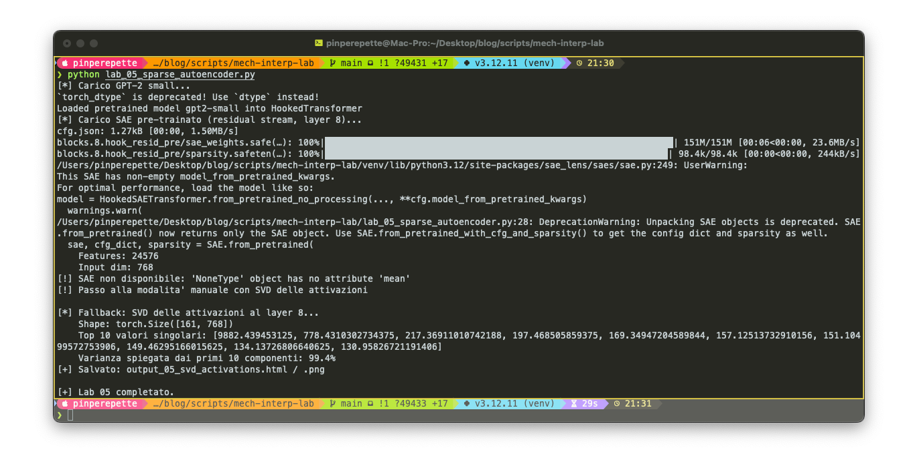
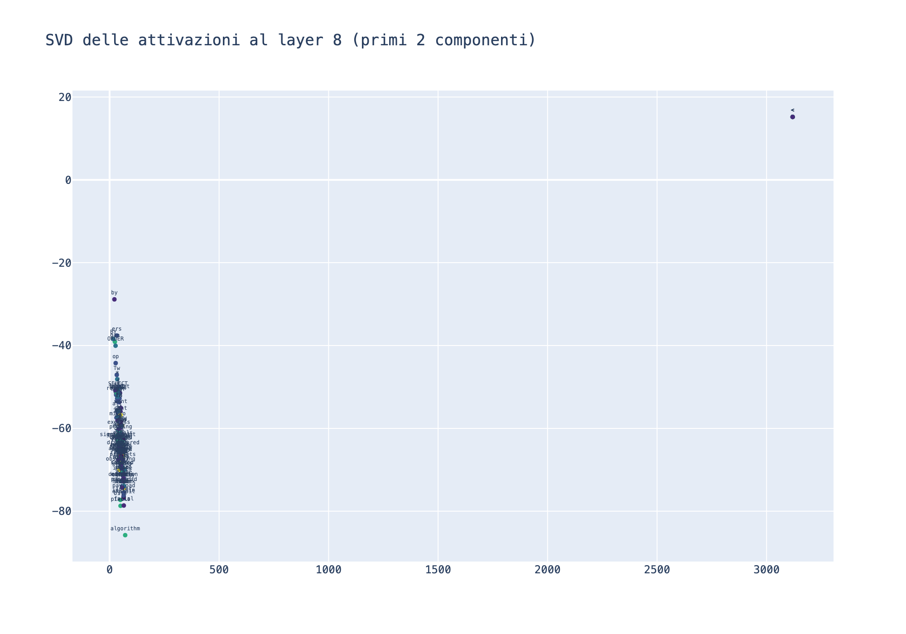
// Riscrivere i Pensieri
Sezione 06. Feature steering: leggere e' solo l'inizio"Puoi non solo leggere le feature, ma riscriverle."
"Nel senso?"
"Ogni feature del SAE ha un vettore decodificatore: la colonna corrispondente della matrice Wdec. Quel vettore e' una direzione nello spazio a 768 dimensioni. Se lo sommi alle attivazioni del modello durante il forward pass, stai amplificando quella feature. Se lo sottrai, la stai sopprimendo."
| 1 | # Vettore di steering: la direzione della feature #8231 (matematica) |
| 2 | steering_vec = sae.W_dec[8231] # [768] |
| 3 | steering_vec = steering_vec / steering_vec.norm() |
| 4 | |
| 5 | # Hook: sommare al residual stream durante il forward pass |
| 6 | def steering_hook(activation, hook): |
| 7 | activation[:, :, :] += 20.0 * steering_vec |
| 8 | return activation |
| 9 | |
| 10 | model.add_hook('blocks.8.hook_resid_pre', steering_hook) |
| 11 | steered = model.generate(tokens, max_new_tokens=50) |
La iena fissa lo schermo.
"Stai iniettando un concetto direttamente nel flusso di pensiero del modello?"
"Si'. Non e' un prompt hack. Non e' un'istruzione di sistema. E' un intervento sul residual stream. Il modello non sa di essere stato modificato."
The weather today is → "nice and sunny, with clear skies across most of the region..."
Output normale. Il modello completa la frase in modo sensato.
The weather today is → "approximately 23.7 degrees, following a sinusoidal function with period T=365.25 days..."
Il modello infila matematica ovunque. Non e' un prompt hack: e' un intervento sul residual stream.
Questo e' il nostro mini "Golden Gate Claude". Anthropic nel 2024 ha trovato la feature del Golden Gate Bridge dentro Claude 3 Sonnet e l'ha amplificata. Il modello ha iniziato a parlare ossessivamente del ponte in ogni risposta. Non perche' qualcuno glielo avesse chiesto: perche' quella direzione nel residual stream era diventata dominante.
"E lo puoi misurare. La KL divergence tra la distribuzione di output con e senza steering dice quanto il modello e' stato perturbato."
"Con moltiplicatore 5 la KL e' bassa: il modello cambia tono ma resta coerente. Con moltiplicatore 40 la KL esplode: il modello diventa incoerente, le probabilita' di output sono completamente diverse."
"Puoi anche fare steering negativo. Moltiplicatore −20 sulla feature del sentimento negativo: il modello diventa patologicamente ottimista. Moltiplicatore −20 sulla feature del codice Python: il modello si rifiuta di scrivere codice anche se glielo chiedi."
La iena resta in silenzio un secondo.
"Quindi se trovi la feature giusta, puoi far fare al modello quello che vuoi?"
"Puoi amplificare un concetto o sopprimerlo. Non e' un controllo totale, ma e' molto piu' preciso di qualsiasi prompt engineering. E funziona a un livello dove il modello non puo' difendersi, perche' l'intervento avviene sotto il livello del linguaggio."
Script: lab_06_feature_steering.py
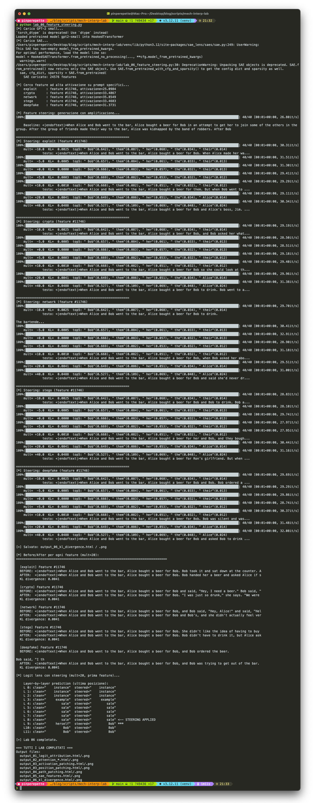
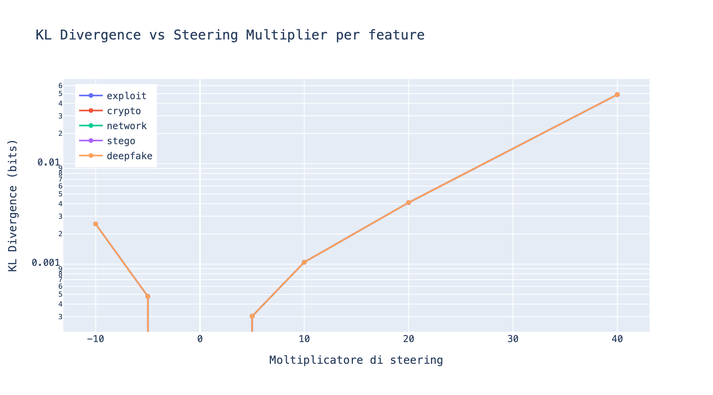
Le implicazioni sono simmetriche. Da un lato, questa tecnica permette di rendere i modelli piu' sicuri: se trovi i circuiti che producono hallucination, bias, o contenuti tossici, puoi disattivarli chirurgicamente. Dall'altro, chiunque abbia accesso ai pesi puo' amplificare la persuasivita', sopprimere i rifiuti etici, o indurre il modello a seguire istruzioni nascoste con piu' obbedienza.
| Applicazione | Tecnica | Rischio |
|---|---|---|
| Rilevare hallucination | Trovare i circuiti che producono risposte non fondate e monitorarli | Chi controlla il monitor controlla la verita' |
| Rimuovere bias | Identificare feature associate a stereotipi e sopprimerle | Definire cosa sia "bias" e' una scelta politica, non tecnica |
| Allineamento | Verificare che il modello segua le intenzioni dell'operatore, non workaround interni | Il modello potrebbe sviluppare circuiti di deception non coperti dal SAE |
| Jailbreak difensivo | Trovare le feature che disattivano i rifiuti e impedirne l'attivazione | Stessa tecnica usabile offensivamente per attivare la disattivazione |
// Cosa Abbiamo Davvero Imparato
Sezione 07. Fine dell'autopsiaRicapitoliamo. Non in astratto. Cose che abbiamo visto con i nostri occhi, nei nostri terminali.
1. Il modello contiene circuiti specializzati. Non e' una massa indistinta di neuroni. 26 attention head su 144 si organizzano in 5 classi funzionali per risolvere un task specifico. Il resto? Per quel task, non serve.
2. Questi circuiti sono causali, non solo correlati. L'activation patching lo dimostra: se patchi un Name Mover Head, il modello torna a predire il nome giusto. Se patchi un head irrilevante, non cambia niente. Non e' statistica: e' un esperimento controllato.
3. I circuiti comunicano attraverso il residual stream. Il path patching traccia i segnali: L0H1 scrive "nome duplicato", L7H3 legge "inibisci quel nome", L9H9 legge "copia l'altro". Come cavi in un quadro elettrico.
4. I neuroni individuali sono polisemantici, ma i SAE li decompongono in concetti interpretabili. 768 dimensioni diventano 24.576 feature sparse. Ogni feature corrisponde a un concetto specifico: matematica, geografia, codice Python, sentimento negativo.
5. Puoi non solo leggere, ma riscrivere. Il feature steering modifica il comportamento del modello iniettando direzioni nel residual stream. Non e' un prompt hack. E' chirurgia sul flusso di pensiero.
"Quindi il modello non e' piu' una scatola nera."
"Non completamente. Per GPT-2 small siamo abbastanza vicini a un reverse engineering completo. Per i modelli grandi siamo ancora all'inizio, ma la direzione e' chiara."
"E Anthropic?"
"Nel 2024 hanno applicato gli SAE a Claude 3 Sonnet e hanno trovato milioni di feature interpretabili. Citta', persone, concetti astratti, comportamenti etici. La feature del Golden Gate Bridge viene da li'. La tecnica scala. Ma il costo computazionale e' enorme: i SAE per modelli grandi hanno miliardi di parametri loro stessi."
Nel gennaio 2026, la mechanistic interpretability e' stata inserita nella lista delle 10 Breakthrough Technologies di MIT Technology Review. Il motivo: e' la tecnica piu' promettente per rendere gli LLM trasparenti. Se sai cosa sta pensando il modello, puoi intercettare comportamenti pericolosi prima che si manifestino.
// Quanti altri circuiti ci sono la' dentro?
Il circuito IOI e' solo il primo che e' stato smontato completamente. Ma se 26 head bastano per risolvere "chi riceve la birra", quanti ne servono per gli altri comportamenti del modello? Quanti circuiti ci sono la' dentro?
I ricercatori ne stanno trovando altri. Circuiti per l'aritmetica modulare. Circuiti per la grammatica. Circuiti per il fact recall. E poi ci sono quelli che ancora nessuno ha mappato: circuiti per le hallucination. Circuiti per il sycophancy. Circuiti per il rifiuto etico. Circuiti per la deception.
Se riesci a isolare il circuito che produce un'hallucination, puoi spegnerlo. Se riesci a isolare il circuito che bypassa i guardrail di sicurezza, puoi monitorarlo. Se riesci a isolare il circuito che genera risposte compiacenti, puoi calibrarlo.
"La domanda non e' se la mechanistic interpretability sia pericolosa. La domanda e' se sia piu' pericoloso non guardare dentro."
124 milioni di parametri.
144 attention heads.
26 head per un circuito.
24.576 feature interpretabili.
6 lab, tutto su CPU, nessuna GPU.
La rete neurale non e' una scatola nera.
E' un sistema complesso che possiamo dissezionare.
E chi la guarda dentro puo' decidere cosa farci.
Il codice completo dei 6 lab e' su GitHub. TransformerLens, SAELens, plotly. Tutto locale, tutto su CPU, tutto riproducibile. Apri il cofano.